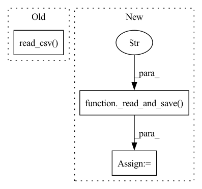

Pattern ID :25949
Before Change
os.makedirs(ASSETS_DIR, exist_ok=True)
if (ASSETS_DIR / "tweet_emotion_data.csv").exists():
dataset = pd.read_csv( ASSETS_DIR / "tweet_emotion_data.csv", index_col=0)
else:
dataset = pd.read_csv(_FULL_DATA_URL, index_col=0)
dataset.to_csv(ASSETS_DIR / "tweet_emotion_data.csv")
After Change
if data_format.lower() not in ["textdata", "dataframe"]:
raise ValueError("data_format must be either "Dataset" or "Dataframe"")
dataset = _read_and_save("tweet_emotion_data.csv" , _FULL_DATA_URL, to_numpy=False)
if not as_train_test:
dataset.drop(columns=["train_test_split"], inplace=True)
if data_format.lower() == "textdata":
if include_properties:In pattern: SUPERPATTERN
Frequency: 3
Non-data size: 3
Instances Fragment ID: 78350552
Project Name: deepchecks/deepchecks
Commit Name: 656d5fc64f48449ebedc84dc32330c0b34021803
Time: 2023-04-04
Author: 67195469+Nadav-Barak@users.noreply.github.com
File Name: deepchecks/nlp/datasets/classification/tweet_emotion.py
M Class Name: AnonimousClass
N Class Name: AnonimousClass
M Method Name: load_data(3)
N Method Name: load_data(3)
M Parent Class:
N Parent Class:
M File Name: deepchecks/nlp/datasets/classification/tweet_emotion.py
N File Name: deepchecks/nlp/datasets/classification/tweet_emotion.py
M Start Line: 101
M End Line: 108
N Start Line: 101
N End Line: 101
Before Change
embeddings : np.ndarray
Embeddings for the tweet_emotion dataset.
return pd.read_csv( _EMBEDDINGS_URL, index_col=0) .to_numpy()
def load_precalculated_predictions(pred_format: str = "predictions") -> np.array:After Change
embeddings : np.ndarray
Embeddings for the tweet_emotion dataset.
all_embeddings = _read_and_save("tweet_emotion_embeddings.csv" , _EMBEDDINGS_URL)
if as_train_test:
train_indexes, test_indexes = _get_train_test_indexes()
return all_embeddings[train_indexes], all_embeddings[test_indexes]
else: Fragment ID: 78350542
Project Name: deepchecks/deepchecks
Commit Name: 656d5fc64f48449ebedc84dc32330c0b34021803
Time: 2023-04-04
Author: 67195469+Nadav-Barak@users.noreply.github.com
File Name: deepchecks/nlp/datasets/classification/tweet_emotion.py
M Class Name: AnonimousClass
N Class Name: AnonimousClass
M Method Name: load_embeddings(1)
N Method Name: load_embeddings(0)
M Parent Class:
N Parent Class:
M File Name: deepchecks/nlp/datasets/classification/tweet_emotion.py
N File Name: deepchecks/nlp/datasets/classification/tweet_emotion.py
M Start Line: 147
M End Line: 147
N Start Line: 133
N End Line: 155
Before Change
if (ASSETS_DIR / "tweet_emotion_probabilities.csv").exists():
preds = pd.read_csv(ASSETS_DIR / "tweet_emotion_probabilities.csv", index_col=0)
else:
preds = pd.read_csv( _PREDICTIONS_URL, index_col=0)
preds.to_csv(ASSETS_DIR / "tweet_emotion_probabilities.csv")
preds = preds.to_numpy()
After Change
The prediction of the data elements in the dataset.
all_preds = _read_and_save("tweet_emotion_probabilities.csv" , _PREDICTIONS_URL)
if pred_format == "predictions":
all_preds = np.array([_LABEL_MAP[x] for x in np.argmax(all_preds, axis=1)])
elif pred_format != "probabilities":
raise ValueError("pred_format must be either "predictions" or "probabilities"") Fragment ID: 78350546
Project Name: deepchecks/deepchecks
Commit Name: 656d5fc64f48449ebedc84dc32330c0b34021803
Time: 2023-04-04
Author: 67195469+Nadav-Barak@users.noreply.github.com
File Name: deepchecks/nlp/datasets/classification/tweet_emotion.py
M Class Name: AnonimousClass
N Class Name: AnonimousClass
M Method Name: load_precalculated_predictions(2)
N Method Name: load_precalculated_predictions(1)
M Parent Class:
N Parent Class:
M File Name: deepchecks/nlp/datasets/classification/tweet_emotion.py
N File Name: deepchecks/nlp/datasets/classification/tweet_emotion.py
M Start Line: 166
M End Line: 178
N Start Line: 157
N End Line: 189